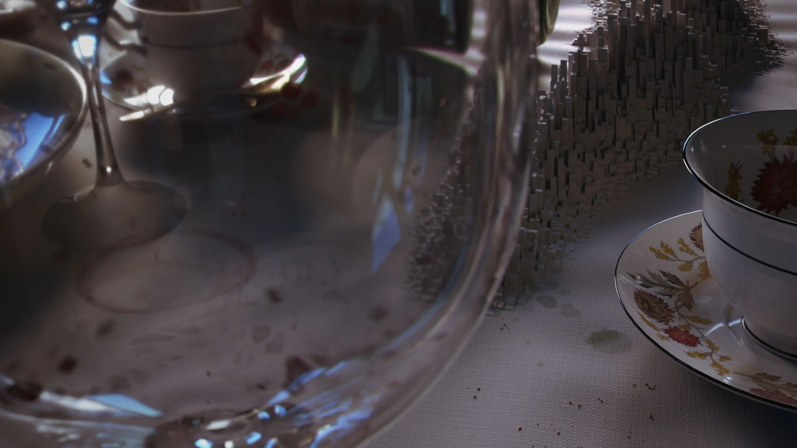
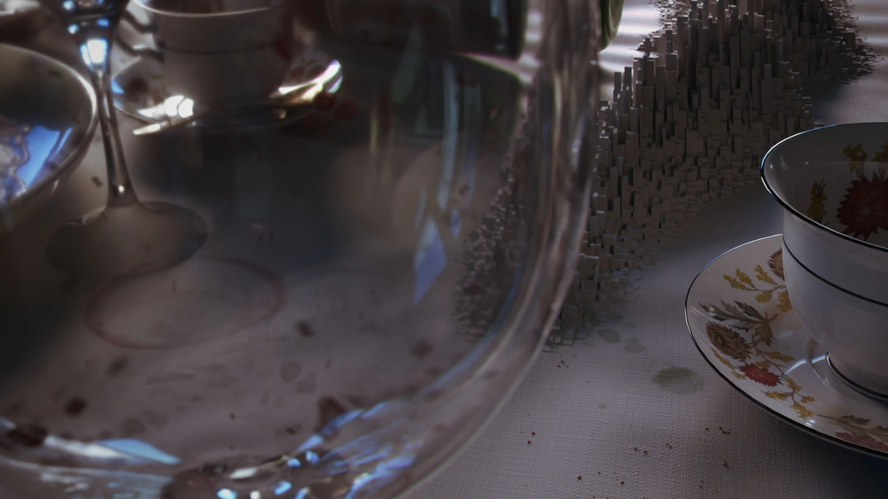
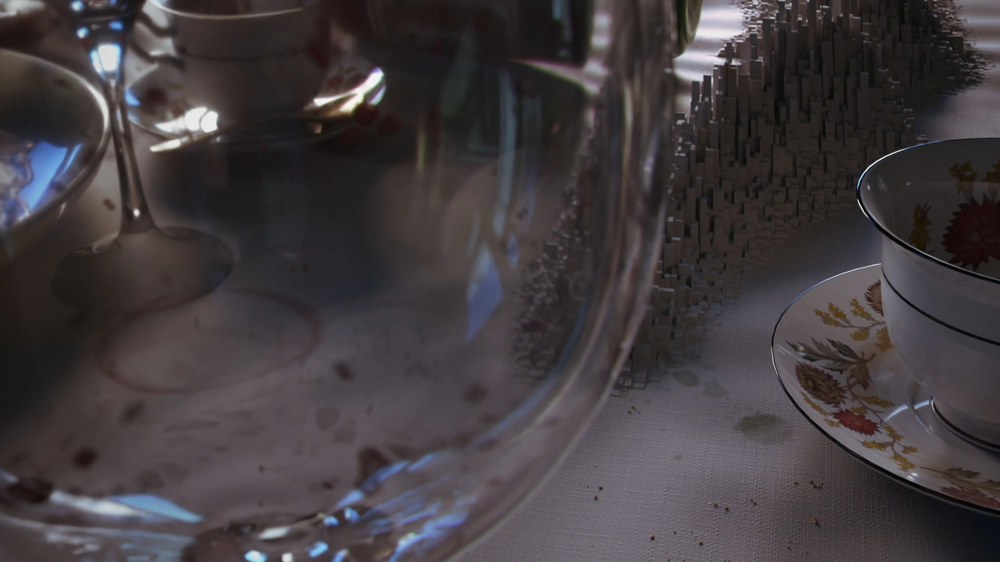

ECHOES
Master Project 1
TAP TO PLAY VIDEO
PLAY
VIDEO
VIDEO

3D Generalist
4 months
2024-2025
Houdini
Nuke
Davinci Resolve
For our Master's degree, we need to create two multimedia projects, one of which is this one. The project, titled "Echoes", explores realistic everyday scenarios that are gradually disrupted by an effect distorting the surrounding environment. This effect serves as a symbol of the destruction caused by war.
Each scenario represents an essential aspect of human life that is lost in war—such as education, community, art, and safety. In the final moments of the short film, it is revealed that this distortion was merely the foreshadowing of a missile heading straight for a civilian building. The last shot then captures the full extent of the devastation.
The initial idea for the project was that everyone had assigned a few shots so that they could work on a varied project and get a look into everything or deepen their workflow.


Our goal was to create a project that would both enhance our own expertise and provide new experiences with different styles and tools. The final product aims to feature a short film with varied pacing that gradually builds tension through visual storytelling. Throughout the creative process, we aimed to improve our technical and creative skills on multiple levels while exploring the devastating impact of war on civilian life.
The project began with storyboarding to synchronize the narrative with the emotional rhythm of everyday life being disrupted. We developed visual effects in Houdini to create the distortion effects that symbolize war's destruction. Finally, the video was rendered with Houdini's rendering systems, followed by color grading in DaVinci Resolve to unify the tone and enhance the storytelling. All elements, environments, and effects were composited and blended together using Nuke.
In addition to handling three shots, I created a Houdini Digital Asset for a consistent displacement effect across the film, designed to intensify as the video progressed. I began by transferring the curveu attribute to primitives, building a user-controlled 0–1 gradient. From there, I developed a flexible tool allowing users to define direction, rotation, animation speed, falloffs, and more. A key quality-of-life feature was real-time guides for curves and displacement direction, letting users preview changes without recomputing the full effect.
Project Management
○ Stick to your goals
○ Don't overscope
Houdini
○ Wood Destruction Workflow
○ Expanded USD Pipeline, working together with others
○ Creating tools for others and tailoring them to their way of thinking